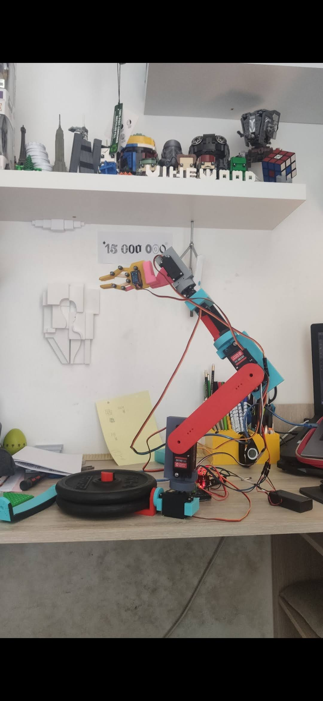
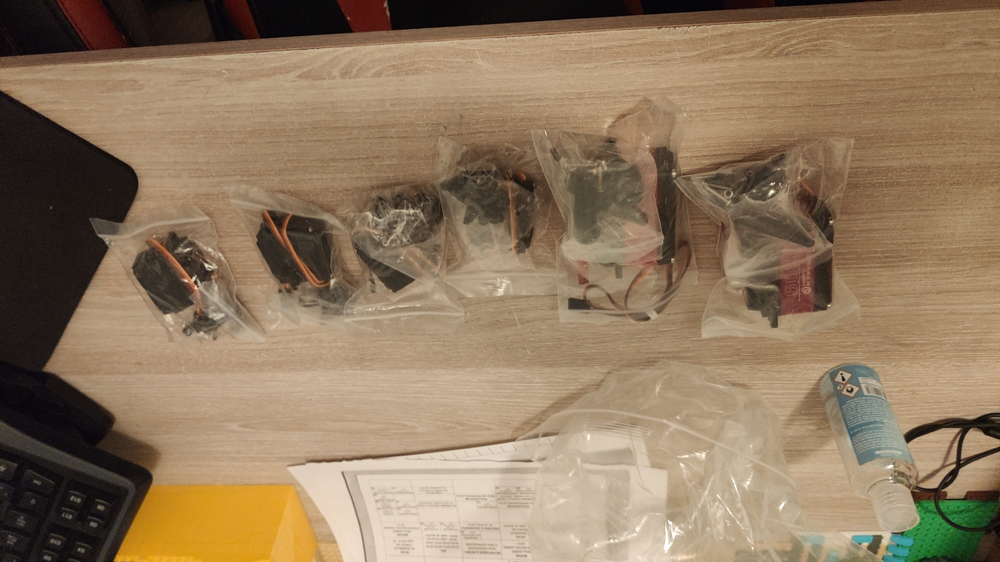
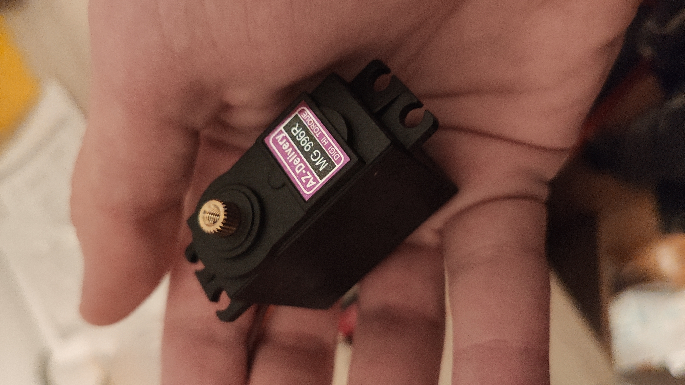
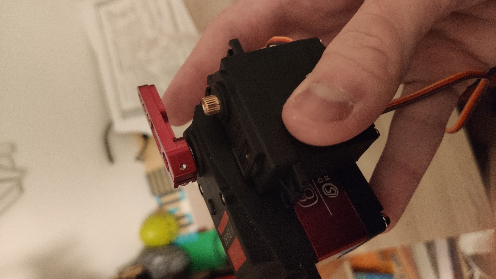
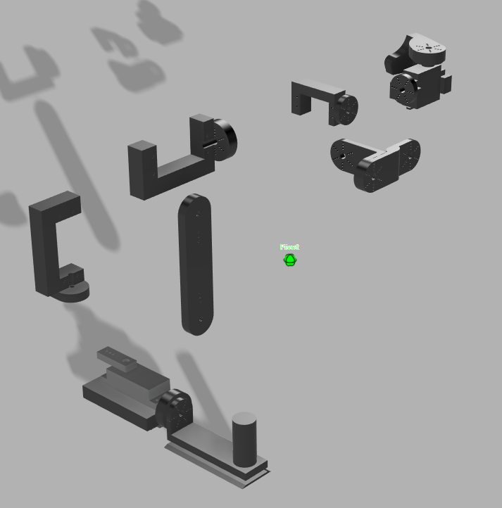

Bras robotique
imprimé en 3D (5 axes)
Projet personnel · 2021 · 16 ans

Contexte
À 16 ans, je voulais construire un bras robotique articulé d'environ 60 cm avec 5 axes contrôlables. L'objectif : comprendre la mécanique, l'électronique et le code embarqué — pas seulement "imprimer une pièce".
Ce que j'ai fait
- Modélisation complète de chaque articulation sous Fusion 360.
- Impression 3D FDM des pièces structurelles (plusieurs itérations).
- Câblage et branchement Arduino, code C++ pour le contrôle des servos.
- Réglages mécaniques : réimpressions, renforts, ajustements de jeu.
Résultat
Le bras fonctionne et a été réimprimé plusieurs fois pour gagner en rigidité. Mouvement multi-axes pilotable obtenu. Le projet reste améliorable (précision, couple, jeux mécaniques) mais la base est réelle.
Ce que j'ai appris
Gérer un projet perso complexe de A à Z : design mécanique, contraintes physiques, limites du plastique imprimé, et surtout la boucle conception → test → correction → itération.
Stack utilisée
Fusion 360
Arduino / C++
Ultimaker Cura
Impression 3D FDM
Galerie



